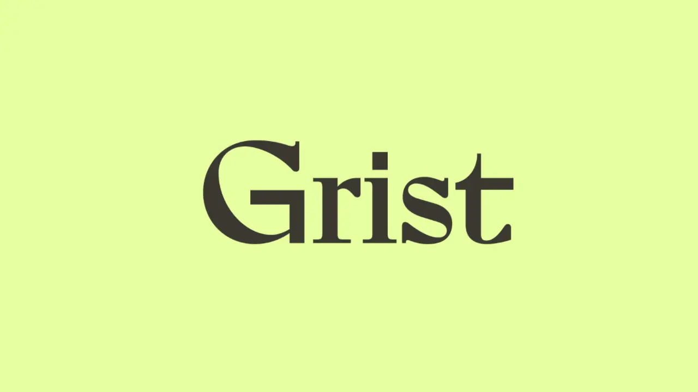

In collaboration with

Grist
Independent climate journalism
Grist's Jess Stahl identified the independent journalists covering climate, energy, and environment. A starting point for anyone tracking the beat beyond legacy outlets.